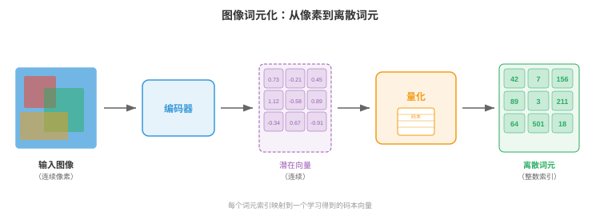
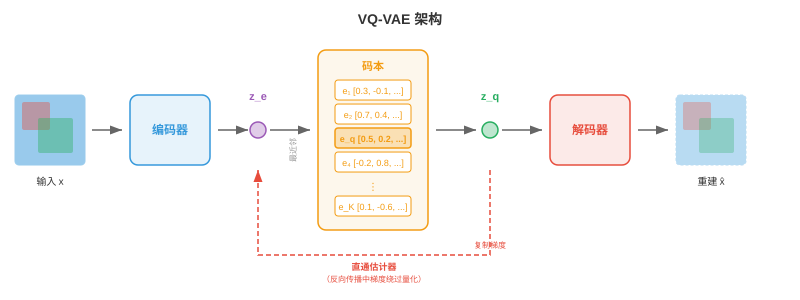
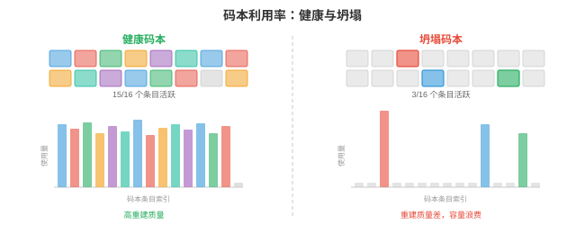
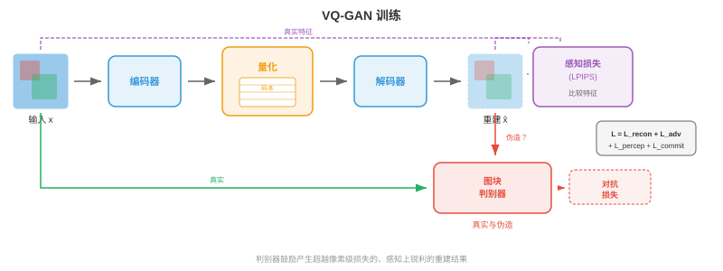
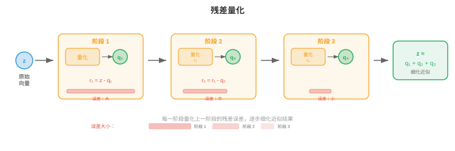
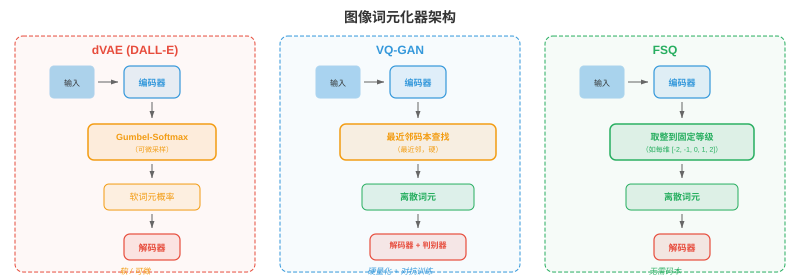
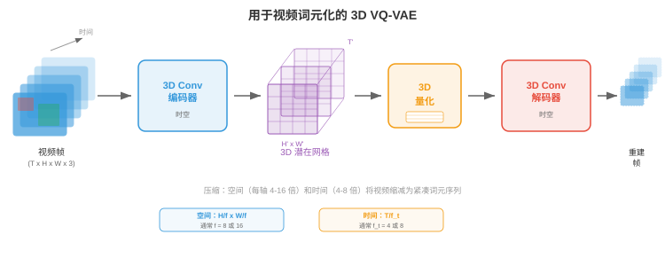
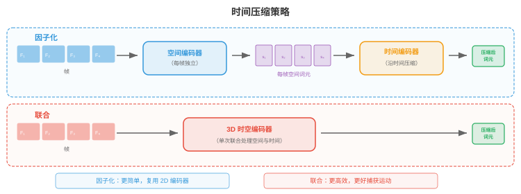
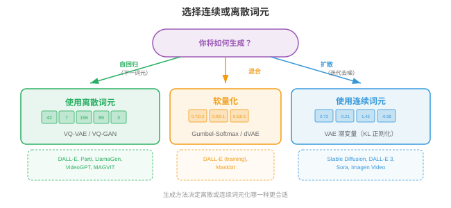
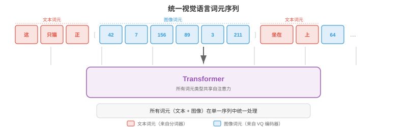

图像与视频词元化¶
图像与视频词元化将连续视觉数据转换为 Transformer 可以像处理文本一样处理的离散词元序列。本节涵盖 VQ-VAE、VQ-GAN、码本学习、DALL-E 的 dVAE、视频词元化和无查表量化。
为什么要对图像词元化¶
- 将语言视为有限字母表：英语大约有 26 个字母，现代语言模型会将文本切分为 30,000 至 100,000 个子词词元。每个句子都变成 Transformer 可以逐一预测的离散符号序列。图像则存在于连续的高维空间：一张 256x256 RGB 图像是 \(\mathbb{R}^{256 \times 256 \times 3} \approx \mathbb{R}^{196{,}608}\) 中的一个点。若要让语言模型用它“说英语”的同一套机制来“说图像”，就需要把连续像素数组转换为从有限词表取出的、可处理的离散词元序列。这个转换就是图像词元化（image tokenisation）。
大白话
文本天然是一串可选符号，图片却是几十万个连续数值。图像词元化就是把图片也变成有限词表里的编号序列，方便 Transformer 像读文字一样读图。
- 想象你是一位马赛克艺术家。你没有无限多种瓷砖色调，而是有固定调色板，例如 8192 种不同瓷砖颜色。要用马赛克重现一张照片，你必须：（1）决定每块瓷砖表示照片的哪个区域；（2）为每个区域挑选最接近的瓷砖颜色；（3）接受一些细节会丢失，但整体图像仍可识别。图像词元化正是如此：编码器将空间图块压缩成潜在向量，码本将每个向量映射到最近条目，最终得到每图块一个整数索引的网格，供离散模型处理。
大白话
可以把码本看成固定调色板：每个图像区域只能挑一种最接近的“视觉积木”，细节会损失，但换来紧凑的整数序列。
- 词元化有三重好处。第一，它极大压缩图像：一张 256x256 图像可以变为 16x16 词元网格，将序列长度从 65,536 个像素降至 256 个词元；对于计算成本随序列长度二次增长的注意力模型，这一规模可以处理。第二，它统一表示：文本词元和图像词元位于同一离散词表中，使单个自回归 Transformer 能生成交错文本与图像。第三，它施加有益瓶颈，迫使模型学习有语义意义的编码，而非记忆像素噪声。
大白话
词元化同时解决三个问题：把输入缩短到算得动、让图和文字可用同一类序列模型处理、逼模型保留重要内容而不是死记像素噪声。

- 回顾第 8 章，卷积网络从图像提取层级特征图；第 7 章中，文本分词器将字符串转换为整数序列。图像词元化恰好位于二者交汇处：它使用 CNN 或视觉 Transformer 编码器（第 8 章）产生空间特征，再借用离散词表思想（第 7 章）将这些特征转换为词元索引。
大白话
前半段借视觉模型把图看成特征，后半段借文本分词的思路把特征编号，二者拼起来就是图像词元化。
VQ-VAE：向量量化¶
- 如第 6 章所见，标准变分自编码器（variational autoencoder，VAE）将输入编码为连续潜在分布，再把该分布的样本解码回重建结果。潜在空间是连续的，不便输入离散序列模型。van den Oord 等人（2017）提出的向量量化变分自编码器（Vector Quantised Variational Autoencoder，VQ-VAE）引入含嵌入向量的可学习码本，并将每个编码器输出对齐至最近码本条目，以离散潜变量取代连续潜变量。
大白话
普通 VAE 的潜在向量可以取无限多值；VQ-VAE 强制每个位置只能选码本里有限个向量之一，因此天然得到离散视觉词元。
- 想象一间恰有 \(K\) 个编号书架的图书馆。一本新书（编码器输出）到达时，管理员将它放在与书架现有藏书（码本向量）最相似的书架上，并记录书架编号。之后要取回该书，只需书架编号：该书架上的码本条目已是足够好的替代表示。这就是向量量化。
大白话
每个连续向量都被分配到最近的编号书架，之后模型只保存书架号。这个号码就是图像位置的离散 token。
- 形式上，VQ-VAE 包含三个组件：
大白话
VQ-VAE 的流水线是先编码、再查码本、最后解码，三部分分别负责压缩、离散化和还原图像。
- 编码器（encoder） \(E\)：将输入图像 \(\mathbf{x} \in \mathbb{R}^{H \times W \times 3}\) 映射为连续潜在向量的空间网格 \(\mathbf{z}_e = E(\mathbf{x}) \in \mathbb{R}^{h \times w \times d}\)，其中 \(h \times w\) 是下采样后的空间分辨率，\(d\) 是嵌入维度。
大白话
编码器把大图片压成较小网格，每个格子是一条连续视觉特征向量。
- 码本（codebook） \(\mathcal{C} = \{\mathbf{e}_1, \mathbf{e}_2, \ldots, \mathbf{e}_K\} \subset \mathbb{R}^d\)：包含 \(K\) 个可学习嵌入向量。常见码本大小为 512 到 16,384 个条目。
大白话
码本是一套可学习的视觉积木库，每个条目代表一种常见局部模式。
- 解码器（decoder） \(D\)：从量化潜变量重建图像。
大白话
解码器拿到离散积木对应的向量后，把它们尽量拼回原始图片。
- 量化步骤（quantisation step）将每个编码器输出 \(\mathbf{z}_e(\mathbf{x})\)（位于空间位置 \((i, j)\)）替换为其最近的码本条目：
大白话
量化就是在码本里找和当前图块特征距离最近的积木，并用它替代原来的连续向量。
- 这是嵌入空间中的最近邻查找，与 k-means 分配（第 6 章）完全相同。索引 \(k^\ast\) 是空间位置 \((i,j)\) 的离散词元，整张图像表示为一个 \(h \times w\) 网格，网格元素来自 \(\{1, \ldots, K\}\) 中的整数。
大白话
每个格子最终只存一个整数编号。把所有编号按原位置排好，就得到图片的离散 token 网格。

- 挑战在于 \(\arg\min\) 不可微：无法穿过离散选择反向传播。VQ-VAE 使用直通估计器（straight-through estimator）解决它：前向传播中，解码器接收 \(\mathbf{z}_q\)（量化向量）；反向传播中，重建损失相对于 \(\mathbf{z}_q\) 的梯度直接复制到 \(\mathbf{z}_e\)，仿佛量化步骤是恒等函数。其紧凑写法为：
大白话
“选最近码本”这一步不能直接求导，直通估计器就在反向传播时假装这一步不存在，让梯度能传回编码器。
- 其中 \(\text{sg}(\cdot)\) 是停止梯度算子。前向传播中它的值为 \(\mathbf{z}_q\)；反向传播中，梯度仅流经 \(\mathbf{z}_e\) 项。
大白话
停止梯度的数值仍在用，但不让梯度通过它回传，从而精确控制哪一部分参数被更新。
- 完整 VQ-VAE 损失有三项：
大白话
总损失同时管三件事：图像还原得像不像、码本是否靠近真实特征、编码器是否老老实实贴近码本。
- 重建损失（reconstruction loss）训练编码器和解码器忠实重现输入。码本损失（codebook loss）（也称 VQ 损失）将码本向量拉向编码器输出；注意 \(\text{sg}(\mathbf{z}_e)\) 表示编码器不会从该项接收梯度，所以它只更新码本。承诺损失（commitment loss）则相反：它鼓励编码器输出保持接近码本向量，防止编码器“逃离”码本。超参数 \(\beta\)（通常为 0.25）控制码本项和承诺项的平衡。
大白话
重建项让结果看起来像原图，码本项让积木向真实特征靠，承诺项让编码器别总产出离所有积木很远的向量。
- 实践中，码本通常用更稳定的指数移动平均（exponential moving average，EMA）而非梯度下降更新。设 \(\mathbf{n}_k\) 为分配至码本条目 \(k\) 的编码器输出数量，\(\mathbf{s}_k\) 为其总和。EMA 更新为：
大白话
EMA 不让码本每一批数据都大幅跳动，而是缓慢向近期被分到它的特征靠拢。它本质上是在持续更新每个“视觉积木”的平均位置。
- 其中 \(\gamma\) 是衰减率（通常为 0.99）。这等价于在编码器输出上运行在线 k-means 算法。
大白话
\(\gamma\) 越接近 1，更新越稳但反应越慢。把不断到来的向量分给最近中心、再更新中心，正是在线版 k-means。
码本坍塌¶
- VQ-VAE 一个臭名昭著的失效模式是码本坍塌（codebook collapse），又称索引坍塌：模型只学会使用 \(K\) 个码本条目中的一小部分，使大部分条目“死亡”。想象一家图书馆中 90% 的书架都是空的，因为管理员总把书送往少数热门书架。这浪费了表示容量。
大白话
码本明明准备了很多积木，模型却反复只用少数几块，其余积木闲置。这会直接减少图片能表达的细节种类。
- 码本坍塌源于训练中编码器、码本和解码器共同适配。若某个条目在多个批次中未被选择，它会逐渐偏离编码器流形，因而更不可能被选择，形成正反馈循环。
大白话
没被选中的条目越来越跟不上真实特征，下一次就更不会被选中，于是“闲置”会自行加剧。
- 有几种技术可以缓解码本坍塌：
大白话
解决思路都是让闲置条目重新接近数据，或让模型不能长期把流量挤到少数条目上。
-
码本重置（codebook reset）：定期复制随机采样的编码器输出，重新初始化死亡条目，使它们在潜在空间活动区域附近重新开始。
大白话
长期没人用的积木就用一个当前常见特征重新初始化，让它有机会重新参与匹配。
-
带拉普拉斯平滑的 EMA 更新（EMA updates with Laplace smoothing）：向 \(\mathbf{n}_k\) 加一个小常数，避免条目计数为零，确保所有条目接收梯度信号。
大白话
给每个条目一个很小的保底计数，避免一次没被选中就彻底失去更新机会。
-
承诺损失调优（commitment loss tuning）：增大 \(\beta\)，强制编码器输出更紧密地聚集在码本条目附近，使分配更加均匀。
大白话
提高这个约束会让编码器更愿意靠近现有积木，减少特征漂到码本覆盖不到的地方。
-
因子化编码（factorised codes）：将码本查找分解为更小查找的乘积（例如两个大小均为 \(\sqrt{K}\) 的码本），通过降低每次查找的有效码本大小提高利用率。
大白话
把一次大选择拆成几次小选择，能组合出很多结果，也让每个小码本更容易被用到。
-
熵正则化（entropy regularisation）：添加鼓励码本使用均匀分布的惩罚项，最大化熵 \(H = -\sum_k p_k \log p_k\)，其中 \(p_k\) 是经验分配概率。
大白话
熵越高，说明使用各个条目越均衡。这个额外约束会惩罚“所有样本都挤到几个编号上”的情况。

VQ-GAN：用于更高保真度的对抗训练¶
- VQ-VAE 能生成尚可的重建，但像素级 \(\ell_2\) 损失倾向于产生模糊输出，因为它平等惩罚每个像素偏差，会对合理细节取平均，而不是选择清晰细节。想象让人画一张脸，使其与所有可能人脸的平均差异最小，他会画出一张模糊的平均脸，而不是清晰的个体脸。
大白话
只按像素逐点扣分时，模型会倾向取各种可能细节的平均，结果安全却发糊。人眼更在意边缘和纹理是否像真的，而不只是在乎每个像素差几分。
- VQ-GAN（Esser et al., 2021）通过将 VQ-VAE 框架与生成对抗网络（第 6 章）的判别器（discriminator）结合来解决这个问题。判别器是基于图块的卷积网络，判断局部图像图块是真实的（来自训练数据）还是伪造的（来自解码器）。这种对抗损失鼓励解码器产生在感知上锐利、真实的纹理，而不是像素均值。
大白话
VQ-GAN 多请了一位专门挑细节毛病的“评委”。解码器为了骗过它，就得画出更像真实照片的纹理和边缘。
- VQ-GAN 目标在 VQ-VAE 损失上增加两项：
大白话
原来的重建要求仍保留，再加上“看起来像不像真的”和“高层结构像不像”的两种要求。
- 对抗损失（adversarial loss） \(\mathcal{L}_\text{adv}\) 是施加于解码器输出的标准 GAN 目标。判别器 \(\mathcal{D}\) 尝试区分真实图块和解码图块，解码器（生成器）则尝试欺骗它。非饱和形式为：
大白话
判别器负责分辨真假，解码器负责让假图看起来像真图。两者对抗，会把解码器的视觉细节逼得更真实。
- 感知损失（perceptual loss） \(\mathcal{L}_\text{perc}\) 比较原始图像与重建图像在预训练网络（通常是 VGG 或 LPIPS）中的特征激活：
大白话
感知损失不逐像素死比，而是借一个懂图像的网络比较“内容和结构像不像”。因此它更能保住清晰的物体轮廓。
- 其中 \(\phi_l\) 表示预训练网络第 \(l\) 层的特征图。这一损失捕获高层结构相似性，而非像素级准确度。
大白话
这里比较的是网络眼中的特征，例如形状、布局和纹理层次，不要求每个像素都恰好相同。
- 权重 \(\lambda_\text{adv}\) 会自适应设定，使对抗梯度和重建梯度保持平衡，防止重建较差的训练早期被对抗损失主导。
大白话
训练刚开始时图片还很差，不能让“逼真”要求压过基本重建。自适应权重负责让两种学习信号处于合适的力度。

- 其结果是：在相同码本大小下，词元化器产生的重建结果比 VQ-VAE 锐利得多。VQ-GAN 是许多主要图像生成系统的骨干词元化器，包括原始 DALL-E、Parti 和大量文生图模型。它将 256x256 图像转换为来自大小 1024-16384 码本的 16x16 或 32x32 离散词元网格，在每个空间维度上实现 16 倍至 64 倍压缩比。
大白话
VQ-GAN 在把图压得很小的同时，能留住更像照片的质感，因此常作为离散文生图系统的视觉编码入口。
残差量化与多尺度码本¶
- 单一码本为重建质量施加硬性上限：每个空间位置只能由一个码本向量表示，码本无法表达的更细粒度细节都会丢失。想象用固定调色板中的一个词描述颜色：“蓝绿色”接近但不精确。若能添加细化描述，例如“蓝绿色，但稍偏蓝、略亮”，就会更接近。
大白话
单次选择只能给出粗略答案。若还允许补充“第一次没描述到的误差”，就能逐层把表示修得更精细。
- 残差量化（residual quantisation，RQ）迭代应用这一思想。第一次量化得到 \(\mathbf{z}_q^{(1)}\) 后，计算残差 \(\mathbf{r}^{(1)} = \mathbf{z}_e - \mathbf{z}_q^{(1)}\)，再用第二个码本量化该残差得到 \(\mathbf{z}_q^{(2)}\)，依此进行 \(T\) 个层级：
大白话
第一层先抓大致内容，下一层只处理剩下的差距。每一层都在给前面的近似打补丁。
- 最终量化表示为 \(\hat{\mathbf{z}} = \sum_{t=1}^{T} \mathbf{z}_q^{(t)}\)。若 \(T\) 个层级各使用大小为 \(K\) 的码本，有效词表大小为 \(K^T\)，但只需存储 \(T \times K\) 个向量而非 \(K^T\) 个。例如，8 个层级且 \(K = 1024\) 时，有效条目数为 \(1024^8 \approx 10^{24}\)，却只需存储 8192 个向量。
大白话
多个小码本按层组合，能表达的组合数会爆炸增长，但实际存储量只随层数线性增加。
- 每个后续层级捕获更细的细节：第一个码本捕获粗结构，第二个捕获中频修正，依此类推。这类似 JPEG 的逐次逼近或网页图像的渐进渲染，先出现粗略版本，再逐步填充细节。
大白话
它像图片渐进加载：先让你看懂大概是什么，再一点点补边缘、纹理和细小变化。

- 多尺度码本（multi-scale codebooks）通过在不同空间分辨率上操作扩展这一思想。它不重复量化同一空间网格，而是在多个尺度量化：粗网格捕获全局结构，细网格捕获局部细节。这与第 8 章对象检测部分的特征金字塔思想相关，不同尺度的特征捕获不同细节层级。
大白话
残差量化是在同一位置不断修正；多尺度码本则让大网格先管整体布局，小网格再管局部细节。
- 乘积量化（product quantisation）是相关技术，它将 \(d\) 维潜在向量拆分为 \(M\) 个维度 \(d/M\) 的子向量，每个子向量使用独立码本量化。这产生 \(K^M\) 大小的有效词表，但只需存储 \(M \times K\) 个向量。乘积量化广泛用于近似最近邻搜索（第 13 章），也已适配至图像词元化。
大白话
它不是按先后层级修误差，而是把一条长向量拆成几段分别编号。各段编号组合起来，同样能用少量积木表示很多情况。
- Mentzer 等人（2023）提出的有限标量量化（finite scalar quantisation，FSQ）采取完全不同的方法：它不学习码本，而是将潜在向量的每一维直接四舍五入到固定整数等级集合之一（例如 \(\{-2, -1, 0, 1, 2\}\)）。每维有 \(L\) 个等级、共有 \(d\) 维时，隐式码本大小为 \(L^d\)。FSQ 完全避免码本坍塌，因为没有学习到的码本向量，只有经确定性取整的学习到的编码器输出。直通估计器处理取整的不可微性。
大白话
FSQ 不维护“积木库”，而是把每个数字压到几个固定档位。没有码本条目，自然也不会出现某些条目长期闲置的坍塌问题。
实践中的图像词元化器¶
- 从 VQ-VAE 到 VQ-GAN 再到残差量化的发展，催生了一系列用于最先进生成模型的实用图像词元化器。
大白话
这些方法都在回答同一件事：怎样把图片压成模型能处理的 token，同时别把视觉质量压坏。
DALL-E 词元化器（dVAE）¶
- 原始 DALL-E（Ramesh et al., 2021）使用离散 VAE（dVAE），将 256x256 图像词元化为来自大小 8192 码本的 32x32 词元网格。dVAE 以 Gumbel-Softmax 松弛替换硬 \(\arg\min\) 量化，使前向传播在训练时可微；推理时使用 \(\arg\max\) 产生硬词元分配。dVAE 使用重建损失、相对于均匀先验的 KL 散度和为 Gumbel-Softmax 学习的温度调度组合训练。随后 DALL-E 训练 120 亿参数自回归 Transformer，对 256 个文本词元和 1024 个图像词元（32x32）的联合分布建模。
大白话
dVAE 先把整张图压成 1024 个视觉编号，DALL-E 再像续写一句话那样续写这些编号，从而根据文字生成图片。
LlamaGen¶
- LlamaGen（Sun et al., 2024）表明，只要拥有好的图像词元化器，就可以将标准 Llama 风格语言模型架构（第 7 章）重新用于自回归图像生成。LlamaGen 使用改进的 VQ-GAN 词元化器和大码本（16,384 个条目），训练一个普通自回归 Transformer（除词元化器外没有特殊图像专用修改），按从左到右的光栅扫描顺序预测图像词元。关键洞见是：图像一旦被词元化为离散序列，对语言有效的同一下一词元预测范式也对图像有效，验证了词元化确实弥合模态鸿沟。
大白话
图像 token 足够好时，语言模型不必换成全新架构，也能按顺序预测下一个视觉 token 来画图。
Cosmos 词元化器¶
- Cosmos 词元化器（NVIDIA，2024）为图像与视频设计统一框架。它采用因果 3D 架构，将图像视为单帧视频，使同一词元化器处理两种模态。Cosmos 同时支持连续和离散词元化模式：连续模式输出实值潜在向量（用于扩散模型后端），离散模式应用有限标量量化产生整数词元（用于自回归模型后端）。编码器使用因果 3D 卷积，因此每帧词元只依赖当前帧和此前帧，支持流式视频词元化。
大白话
Cosmos 用一套编码器兼顾图片和视频，还可按后端需要输出连续向量或离散编号，减少了重复建模。

视频词元化¶
- 视频在图像的空间维度上增加第三个轴：时间。视频是帧的序列，通常每秒 24 至 30 帧；相邻帧高度冗余，因为视觉世界不会在 33 毫秒内剧烈变化。视频词元化利用这种时间冗余，实现远高于逐帧独立词元化的压缩率。
大白话
视频的相邻画面通常差不多，没必要每帧都从零开始编码。关键是记录哪些内容没变、哪些内容动了。
- 将视频压缩想象为翻页书。若每一页都从头绘制，需要数千张精细图画；但大部分页面与相邻页面几乎相同，因此每 10 页画一张完整“关键帧”，只记录中间页面的微小变化即可。视频词元化器会自动学会这一技巧。
大白话
它的目标像翻页书：少量信息保留主画面，其余信息只描述前后帧的变化，从而省下大量 token。
3D VQ-VAE¶
- VQ-VAE 向视频扩展最直接的形式是3D VQ-VAE：它将编码器和解码器的 2D 卷积替换为同时沿空间和时间维度操作的 3D 卷积。若编码器在空间上以 \(f_s\) 倍、时间上以 \(f_t\) 倍下采样，尺寸为 \(T \times H \times W\) 的视频片段会变成 \((T/f_t) \times (H/f_s) \times (W/f_s)\) 的词元网格。
大白话
3D VQ-VAE 不只看单帧长什么样，还一起看前后画面怎么变化，因此 token 同时携带空间和时间信息。
- 例如，当 \(f_s = 16\) 且 \(f_t = 4\) 时，16 帧的 256x256 视频片段变为 \(4 \times 16 \times 16 = 1024\) 个词元序列。它足够紧凑，可由 Transformer 自回归建模；原始像素数量却为 \(16 \times 256 \times 256 \times 3 \approx 3.1\) 百万个值。
大白话
这个例子把约 310 万个像素数压成 1024 个 token，压缩非常大，才使序列模型处理视频变得现实。
- 3D 卷积联合学习空间和时间特征。早期层捕获局部运动（帧间移动的边缘），较深层捕获更高层动态（对象出现、消失或改变形状）。这是第 8 章卷积网络的同一层级特征提取原则沿时间轴的扩展。
大白话
浅层先看哪里在小幅移动，深层再理解“物体出现了”或“形状变了”这类事件。

因果视频词元化器¶
- 标准 3D 卷积会查看过去、当前和未来帧，这意味着在对任意部分词元化之前，必须先拥有整个视频片段。因果视频词元化器（causal video tokenisers）约束时间卷积，使每个输出仅依赖当前帧和过去帧，绝不依赖未来帧。这类似自回归 Transformer（第 7 章）的因果掩码：信息沿时间向前流动，绝不向后。
大白话
因果版本遵守现实时间：现在只能看已经发生的画面，不能偷看未来，所以可边接收边处理。
- 因果词元化对两种场景至关重要。第一是流式处理（streaming）：帧到达时即可实时词元化，无需缓冲未来帧。第二是自回归生成（autoregressive generation）：当 Transformer 逐帧生成视频时，帧 \(t\) 的词元必须能在不知道帧 \(t+1\) 的情况下计算，因为帧 \(t+1\) 尚未生成。
大白话
实时摄像头没有未来帧可等；逐帧生成视频时未来帧也还不存在。两种情况都必须用因果词元化。
- 因果约束通过非对称填充时间卷积实现：时间尺寸为 \(k\) 的卷积核在过去侧填充 \(k-1\) 个零、未来侧不填充零，确保时刻 \(t\) 的输出只依赖 \(t-k+1, \ldots, t\) 时刻的输入。
大白话
卷积窗口只向过去展开，不向未来伸手。这样结构上就保证了模型无法读取未来画面。
- 因果视频词元化器有一个优雅特性：无需特殊处理，就能对单张图像（仅一帧的“视频”）词元化。第一帧没有过去上下文，因此词元只由该帧计算。这种图像-视频统一（image-video unification）使单一词元化器服务两种模态，简化架构，并支持使用同一解码器生成图像和视频的模型。
大白话
把图片当成只有一帧的视频，就能复用同一套模型。这样训练和部署只维护一套视觉词元化器。
时间压缩策略¶
- 不同应用需要不同时间压缩比。动作识别中，细微运动很重要，温和压缩（\(f_t = 2\)）可保留时间细节；长视频生成中，存储数千帧难以承受，因此需要激进压缩（\(f_t = 8\) 或更高）。
大白话
要辨认一个小动作时不能压得太狠；要处理很长的视频时则必须多压一些。压缩率是在细节和算力之间取舍。
- 一些词元化器使用因子化压缩（factorised compression）：分别在不同阶段完成空间和时间压缩。首先，2D 编码器独立压缩每帧，产生逐帧潜在网格；随后，1D 时间编码器沿时间维度压缩。这种因子化比完整 3D 卷积的计算成本更低，也允许空间与时间采用不同压缩比；代价是捕获时空模式（如斜向移动的球）不如联合 3D 编码高效。
大白话
先把每帧图片变小，再把帧序列变短，计算更省且好调参；但空间和时间被拆开看，对复杂运动的理解会弱一点。
- 时间插值词元（temporal interpolation tokens）是近期创新：词元化器只完整编码关键帧，将中间帧表示为轻量插值编码，描述关键帧间如何变形。这映射了经典视频压缩（H.264/HEVC 的 I 帧和 P 帧），但发生在学习到的潜在空间中。
大白话
只把少数关键画面完整存下，其余帧记录“从这一帧变到下一帧”的方法。这和视频编码的关键帧思路相同，只是工作在模型学到的表示里。

连续词元与离散词元¶
- 并非每个下游模型都需要离散词元。扩散模型（diffusion models）（第 10 章第 4 节）原生使用连续值：它们迭代地对高斯样本去噪，损失函数（去噪得分匹配）定义在连续空间上。对于扩散后端，词元化器编码器产生从不量化的连续潜在向量。潜在扩散模型（latent diffusion models）（Stable Diffusion、DALL-E 3、Flux）使用类似 VQ-GAN 的编码器-解码器，但完全跳过码本，在连续潜在空间中运行。
大白话
扩散模型本来就在连续数值上逐步去噪，没必要把向量硬塞进整数编号。跳过量化还能避免这一步带来的信息损失。
- 相反，自回归模型（autoregressive models）（GPT 风格）通过在 \(K\) 个类别上做 softmax，从有限词表预测下一个词元。它们根本上需要离散词元。每个使用自回归 Transformer 的图像生成系统（DALL-E、Parti、LlamaGen、Chameleon）都依赖离散词元化器。
大白话
自回归模型每一步都在“从词表里选下一个编号”，所以视觉输入必须先变成有限个可选编号。
- 因此，连续或离散词元的选择取决于生成后端：
大白话
先看后面的生成模型怎么工作，再决定词元形式。不是哪一种更高级，而是接口必须匹配。
- 以下情况使用离散词元（discrete tokens）：模型是自回归模型（以交叉熵损失进行下一词元预测）；想与文本词元共享词表以构建统一多模态模型；或需要精确的词元级控制（例如检索或以词元替换进行编辑）。
大白话
需要像语言模型一样逐个选 token、或要和文字共用词表时，选离散词元最合适。
- 以下情况使用连续词元（continuous tokens）：模型是扩散模型或流匹配模型；任务要求极高保真重建（连续潜变量完全避免量化误差）；或希望使用在实值向量上工作的回归损失。
大白话
需要连续去噪、回归，或最在乎还原精度时，保留连续向量更自然。
- 一些近期架构支持两种模式。例如 Cosmos 词元化器可从同一编码器输出连续潜变量（用于扩散模式）或经 FSQ 离散化的词元（用于自回归模式），只需开关一个轻量量化头。
大白话
同一个视觉编码器可以根据后端换输出格式，一边服务扩散模型，一边服务自回归模型。
- 软量化（soft quantisation）是折中方案：它不进行硬 \(\arg\min\) 分配，而是计算最近 top-\(k\) 码本条目的加权平均，权重由负距离上的 softmax 给出。它比硬量化保留更多信息，同时仍近似离散。一些系统训练时使用软量化，推理时使用硬量化。
大白话
硬量化只能选一个积木；软量化会把几个相近积木按权重混合。训练时这样更平滑，最终使用时仍可切回明确编号。

应用¶
自回归图像生成¶
- 图像成为离散词元序列后，即可训练标准自回归 Transformer 对其建模。图像词元被展平为一维序列（通常按光栅扫描顺序：从左到右、从上到下），Transformer 用标准交叉熵损失学习 \(p(\text{token}_i | \text{token}_1, \ldots, \text{token}_{i-1})\)。生成时逐一采样词元，将完成网格传入词元化器解码器以产生像素。
大白话
图片网格先按固定顺序排成一行，模型每次猜下一个格子的编号。所有格子猜完，再由解码器把编号网格还原成图片。
- 以文本作为条件很直接：将文本词元置于图像词元序列之前，模型便学习 \(p(\text{image tokens} | \text{text tokens})\)。DALL-E、Parti 和 LlamaGen 正是这样完成文生图。文本词元和图像词元共享同一 Transformer、同一注意力机制，通常还共享同一嵌入表（文本和图像词元占据不同索引范围）。
大白话
先给模型读文字，再让它接着生成图像 token，就形成了“根据文字续写图片”。
- 光栅扫描顺序引入人为的不对称性：图像左上角最先生成，完全没有右下角的上下文。多项工作解决了这个问题。掩码图像建模（masked image modelling）（MaskGIT）训练双向 Transformer 同时生成所有词元但具有不同置信度，并迭代揭开最有置信度的词元。多尺度生成（multi-scale generation）先生成捕获全局构图的粗词元，再以残差词元细化。这些方法以纯从左到右生成的简洁性为代价，换取更好的全局连贯性。
大白话
从左上一路画到右下时，前面不知道后面要画什么，整体布局容易失衡。并行填空或先画草图再补细节，能让全图更协调。
统一视觉语言词元¶
- 图像词元化最深层的动机是统一（unification）：将视觉和语言放入同一表示格式，使单一模型架构同时处理二者。正如第 7 章所述，语言模型是能力极强的序列到序列机器。将图像表示为词元序列后，我们就能直接继承语言建模的全部基础设施，包括预训练配方、扩展定律、RLHF 和上下文长度扩展。
大白话
一旦图片也变成 token 序列，处理文字的成熟方法就能直接迁移到视觉任务上，不必为每种模态重新造一套系统。
- Chameleon（Meta，2024）是突出示例：它使用含 8192 个码本条目的 VQ-GAN 词元化器，将图像转换为词元，并与文本词元交错放入约 65,000 个条目的单一词表（文本 + 图像）。标准 Transformer 在混合图文序列上训练，使它用同一前向传播即可根据图像生成文本、根据文本生成图像，或生成交错图文内容。
大白话
Chameleon 把文字编号和图片编号放进同一个大词表，所以同一模型既能看图说话，也能按文字画图。
- Gemini（Google，2024）以大规模采用类似路径：它在单一 Transformer 内原生理解和生成图像、音频和文本，模态专用词元化器将输出送入共享序列。
大白话
各种输入先各自被翻译成模型能接收的序列，之后由同一个 Transformer 联合理解和生成。
- 统一模型的关键工程挑战是词表平衡（vocabulary balance）：若 65,000 个词表条目中仅 8192 个是图像词元，模型可能给视觉分配不足的容量。解决方案包括每种模态使用独立嵌入层（仅在注意力层共享）、按模态加权损失，以及在预训练中仔细设计数据混合比例。
大白话
若训练里文字 token 远多于图像 token，模型会更擅长文字而忽略视觉。必须从词表、损失和数据比例上给不同模态合理的份额。

编程任务（使用 CoLab 或笔记本）¶
-
在 JAX 中实现一个最小 VQ 层：给定一批编码器输出向量，执行最近邻码本查找并计算 VQ-VAE 损失（重建 + 码本 + 承诺）。将码本利用率可视化为直方图。
import jax import jax.numpy as jnp import matplotlib.pyplot as plt # --- Minimal VQ layer --- key = jax.random.PRNGKey(42) d = 8 # embedding dimension K = 64 # codebook size n_vectors = 256 # batch of encoder outputs # Random encoder outputs and codebook k1, k2 = jax.random.split(key) z_e = jax.random.normal(k1, (n_vectors, d)) # encoder outputs codebook = jax.random.normal(k2, (K, d)) * 0.1 # codebook (small init) # Nearest-neighbour lookup: find closest codebook entry for each z_e # distances[i, k] = ||z_e[i] - codebook[k]||^2 distances = ( jnp.sum(z_e ** 2, axis=1, keepdims=True) - 2 * z_e @ codebook.T + jnp.sum(codebook ** 2, axis=1, keepdims=True).T ) indices = jnp.argmin(distances, axis=1) # token indices z_q = codebook[indices] # quantised vectors # VQ-VAE loss terms beta = 0.25 loss_codebook = jnp.mean((jax.lax.stop_gradient(z_e) - z_q) ** 2) loss_commit = jnp.mean((z_e - jax.lax.stop_gradient(z_q)) ** 2) loss_total = loss_codebook + beta * loss_commit print(f"Codebook loss: {loss_codebook:.4f}, Commitment loss: {loss_commit:.4f}") # Codebook utilisation unique, counts = jnp.unique(indices, return_counts=True, size=K, fill_value=-1) plt.figure(figsize=(10, 4)) plt.bar(range(K), counts, color='#3498db', alpha=0.8) plt.xlabel('Codebook Index'); plt.ylabel('Assignment Count') plt.title(f'Codebook Utilisation ({jnp.sum(counts > 0)}/{K} entries used)') plt.grid(True, alpha=0.3); plt.tight_layout(); plt.show() # Try: increase K to 512 and observe collapse. Then add codebook reset logic. -
构建一个学习平铺二维分布的玩具二维向量量化器。生成随机二维点，通过 EMA 更新学习码本，并可视化 Voronoi 区域。
import jax import jax.numpy as jnp import matplotlib.pyplot as plt # Generate 2D data from a mixture of Gaussians key = jax.random.PRNGKey(0) n_points = 2000 K = 16 # codebook entries gamma = 0.99 # EMA decay # Four clusters keys = jax.random.split(key, 5) centres = jnp.array([[2, 2], [-2, 2], [-2, -2], [2, -2]], dtype=jnp.float32) data = jnp.concatenate([ jax.random.normal(keys[i], (n_points // 4, 2)) * 0.5 + centres[i] for i in range(4) ]) # Initialise codebook from random data points idx = jax.random.choice(keys[4], n_points, (K,), replace=False) codebook = data[idx] ema_count = jnp.ones(K) ema_sum = codebook.copy() # Run EMA-based codebook learning for several epochs for epoch in range(30): # Assign each point to nearest codebook entry dists = jnp.sum((data[:, None, :] - codebook[None, :, :]) ** 2, axis=2) assignments = jnp.argmin(dists, axis=1) # EMA update for k in range(K): mask = (assignments == k) count_k = jnp.sum(mask) ema_count = ema_count.at[k].set(gamma * ema_count[k] + (1 - gamma) * count_k) if count_k > 0: sum_k = jnp.sum(data[mask], axis=0) ema_sum = ema_sum.at[k].set(gamma * ema_sum[k] + (1 - gamma) * sum_k) codebook = ema_sum / ema_count[:, None] # Visualise assignments and codebook fig, ax = plt.subplots(1, 1, figsize=(8, 8)) colors = plt.cm.tab20(jnp.linspace(0, 1, K)) for k in range(K): mask = assignments == k ax.scatter(data[mask, 0], data[mask, 1], c=[colors[k]], s=5, alpha=0.3) ax.scatter(codebook[:, 0], codebook[:, 1], c='black', s=120, marker='X', edgecolors='white', linewidths=1.5, zorder=10, label='Codebook') ax.set_title(f'Learned VQ Codebook ({K} entries) on 2D Data') ax.legend(); ax.set_aspect('equal'); ax.grid(True, alpha=0.3) plt.tight_layout(); plt.show() # Try: increase K to 64 and observe finer tiling. Reduce gamma and see instability. -
演示残差量化：以 \(T\) 个连续量化阶段编码一批向量，并测量重建误差如何随层级增加而下降。
import jax import jax.numpy as jnp import matplotlib.pyplot as plt key = jax.random.PRNGKey(7) d = 16 # embedding dimension K = 32 # codebook size per level T = 8 # number of residual levels n_vectors = 512 # Random data to quantise k1, *cb_keys = jax.random.split(key, T + 1) z = jax.random.normal(k1, (n_vectors, d)) # Independent random codebooks for each level codebooks = [jax.random.normal(cb_keys[t], (K, d)) * (0.5 ** t) for t in range(T)] # Residual quantisation loop residual = z.copy() z_hat = jnp.zeros_like(z) errors = [] for t in range(T): cb = codebooks[t] dists = (jnp.sum(residual ** 2, axis=1, keepdims=True) - 2 * residual @ cb.T + jnp.sum(cb ** 2, axis=1, keepdims=True).T) indices = jnp.argmin(dists, axis=1) z_q_t = cb[indices] z_hat = z_hat + z_q_t residual = residual - z_q_t mse = jnp.mean(jnp.sum((z - z_hat) ** 2, axis=1)) errors.append(float(mse)) print(f"Level {t+1}: MSE = {mse:.4f}") plt.figure(figsize=(8, 5)) plt.plot(range(1, T + 1), errors, 'o-', color='#e74c3c', linewidth=2, markersize=8) plt.xlabel('Residual Quantisation Level') plt.ylabel('Reconstruction MSE') plt.title('Error Reduction with Residual Quantisation') plt.xticks(range(1, T + 1)); plt.grid(True, alpha=0.3) plt.tight_layout(); plt.show() # Try: use a single codebook of size K*T and compare with RQ. Which wins? -
模拟一个简单的一维“视频词元化器”：生成一维信号序列（模拟视频帧），应用因果时间压缩，并从重建质量上与非因果压缩比较。
import jax import jax.numpy as jnp import matplotlib.pyplot as plt key = jax.random.PRNGKey(99) n_frames = 16 frame_len = 64 # Generate a "video": a slowly moving Gaussian bump across frames x_axis = jnp.linspace(-3, 3, frame_len) frames = jnp.stack([ jnp.exp(-0.5 * (x_axis - (-2 + 4 * t / n_frames)) ** 2) for t in range(n_frames) ]) # shape: (n_frames, frame_len) # Causal temporal compression: each frame's code depends only on past frames # Simple approach: average current frame with exponential decay of past alpha_causal = 0.6 causal_codes = jnp.zeros_like(frames) causal_codes = causal_codes.at[0].set(frames[0]) for t in range(1, n_frames): causal_codes = causal_codes.at[t].set( alpha_causal * frames[t] + (1 - alpha_causal) * causal_codes[t - 1] ) # Non-causal: average with both past and future (bilateral smoothing) kernel = jnp.array([0.2, 0.6, 0.2]) # past, current, future padded = jnp.concatenate([frames[:1], frames, frames[-1:]], axis=0) noncausal_codes = jnp.stack([ kernel[0] * padded[t] + kernel[1] * padded[t+1] + kernel[2] * padded[t+2] for t in range(n_frames) ]) # Reconstruction error mse_causal = jnp.mean((frames - causal_codes) ** 2) mse_noncausal = jnp.mean((frames - noncausal_codes) ** 2) print(f"Causal MSE: {mse_causal:.6f}, Non-causal MSE: {mse_noncausal:.6f}") fig, axes = plt.subplots(1, 3, figsize=(15, 5)) for ax, data, title in zip(axes, [frames, causal_codes, noncausal_codes], ['Original Frames', f'Causal (MSE={mse_causal:.5f})', f'Non-causal (MSE={mse_noncausal:.5f})']): ax.imshow(data, aspect='auto', cmap='viridis', origin='lower') ax.set_xlabel('Spatial Position'); ax.set_ylabel('Frame Index') ax.set_title(title) plt.tight_layout(); plt.show() # Try: vary alpha_causal and the kernel weights. What happens with alpha=1.0?